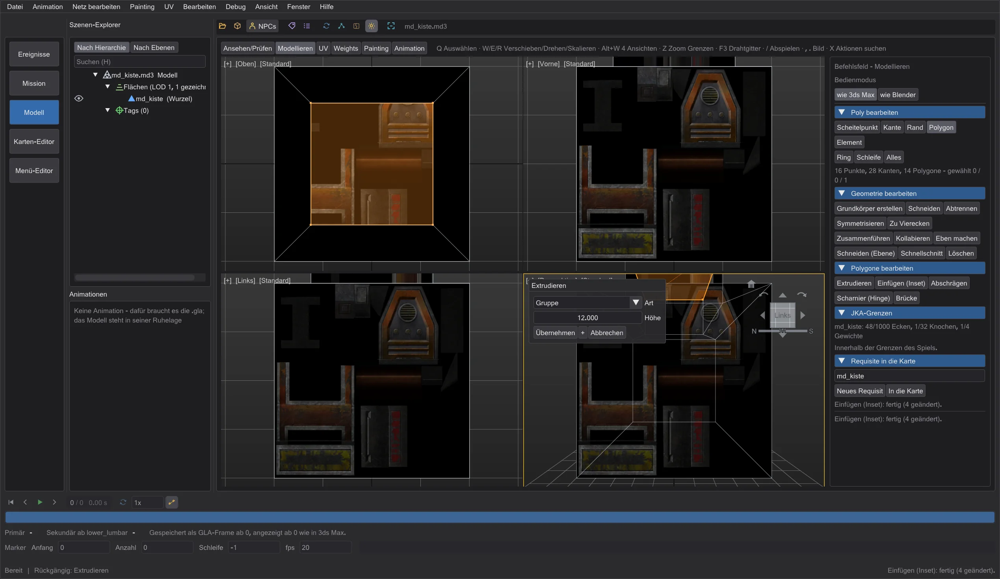
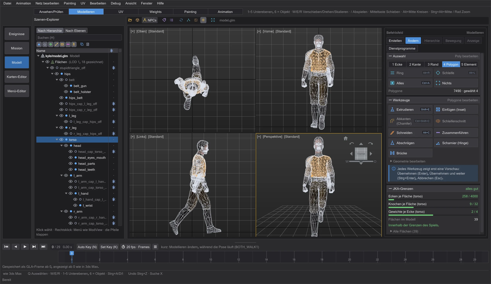
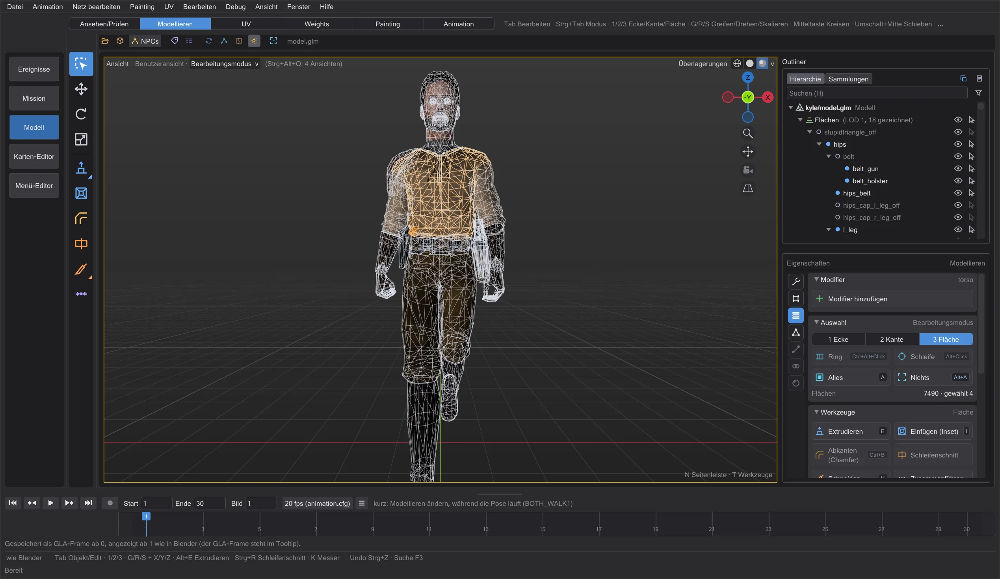
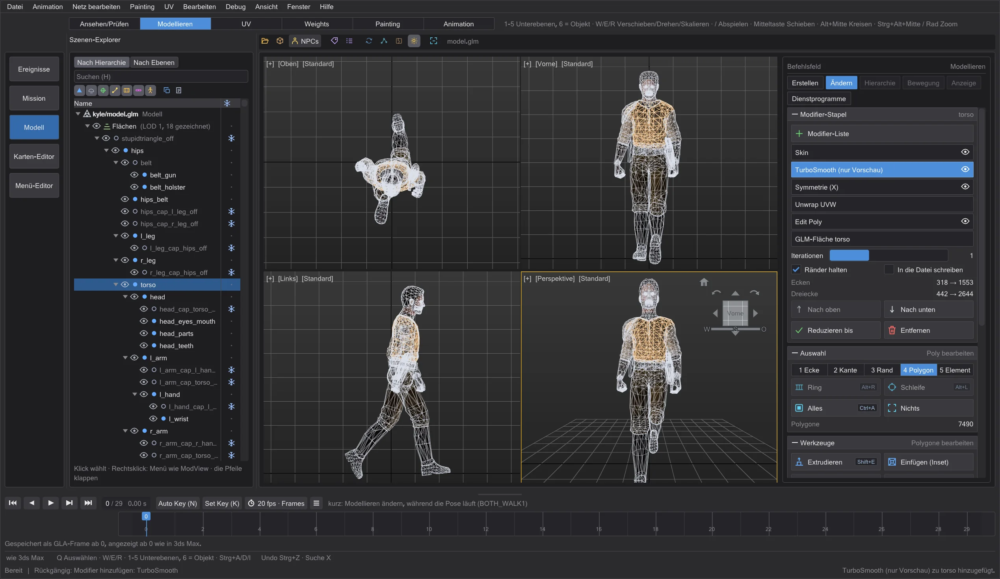
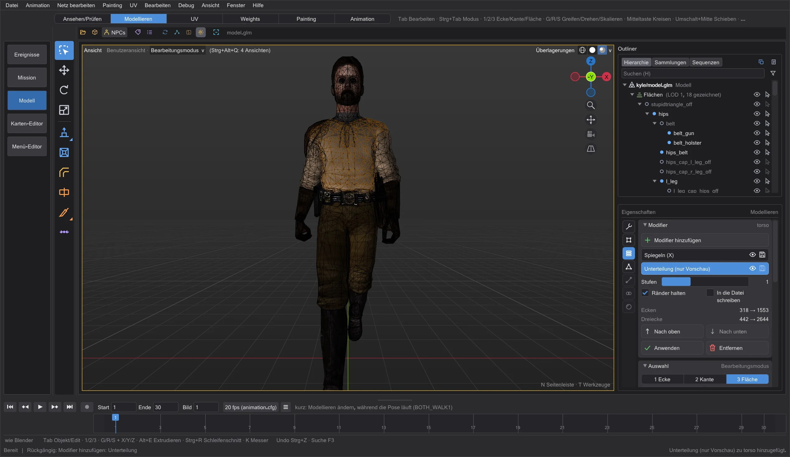
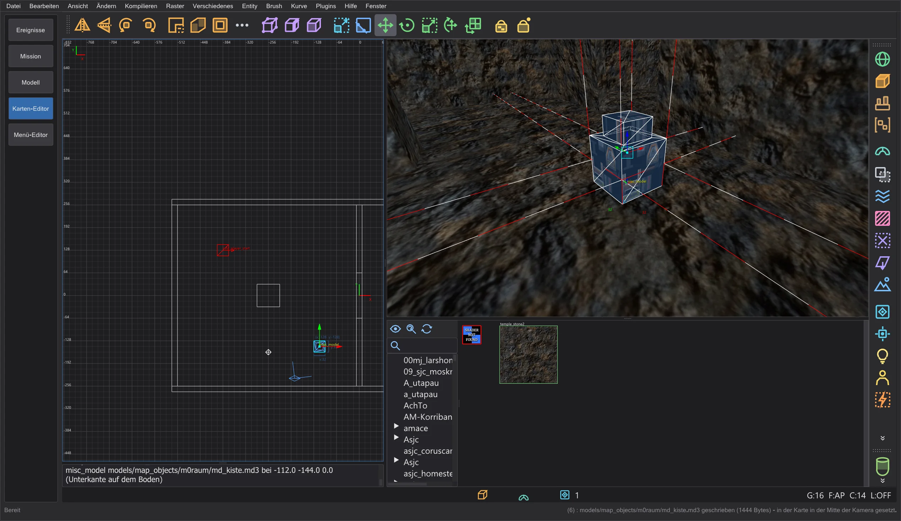

Model-Tab: Modellieren und Requisiten für die Karte
Baue und ändere die Flächen einer .glm oder .md3 mit Polygon-Werkzeugen wie in 3ds Max (Editable Poly) oder im Edit Mode von Blender - und setze ein Requisit wie einen Stuhl oder eine Kiste mit einem Klick in die offene Karte.
Der Bereich Modellieren#
Wähle oben im Model-Tab den Bereich Modellieren. Die Tasten 1 bis 5 (Blender-Modus 1 bis 3) wählen die Ebene: Scheitelpunkt, Kante, Rand, Polygon und Element; jede Ebene behält ihre Auswahl wie in 3ds Max. Ein Klick wählt, Strg fügt hinzu, Alt nimmt weg (Blender: Umschalt fügt hinzu oder nimmt weg), ein Rahmen wählt alles, was er kreuzt. Die Ansicht zeichnet die Polygone über das Modell - zwei Dreiecke der Datei, die eben nebeneinander liegen, sind ein Viereck, Zu Vierecken fügt sie zusammen. W/E/R (Blender G/R/S) verschieben, drehen und skalieren die Auswahl. Die Gruppe Werkzeuge rechts zeigt die Werkzeuge der Ebene; dieselben stehen im Menü Netz bearbeiten, im Rechtsklick der Ansicht und in der Suche (X, im Blender-Modus F3), und jeder Tooltip nennt seine Taste (3ds-Max-Modus: die Vorgaben der Autodesk-Tabelle, etwa Umschalt+E Extrude, Strg+Umschalt+B Bevel, Strg+Umschalt+C Chamfer, Alt+L/Alt+R Schleife/Ring) oder, bei einem Werkzeug ohne Taste, den Weg über das Menü. Ohne Modell beginnt Neues Requisit eine leere .md3 mit der Textur, die im Karten-Editor gerade gewählt ist.

Das Feld rechts ist aufgebaut wie der freigegebene Entwurf: drei Gruppen untereinander. Auswahl enthält die Ebenen als eine Reihe von Feldern mit ihrer Taste davor (3ds-Max-Modus 1 bis 5, Blender-Modus 1 Ecke, 2 Kante, 3 Fläche), darunter Ring, Schleife, Alles, Nichts und die Zähler des Netzes mit der Zahl der gewählten. Werkzeuge zeigt die sechs Hauptwerkzeuge als gleich breite Knöpfe mit Symbol und der Taste des Bedienmodus - Extrudieren, Einfügen (Inset), Abkanten (Chamfer), Schleifenschnitt, Schneiden, Zusammenführen -, danach die weiteren Werkzeuge der Ebene unter ihrem Namen aus 3ds Max (Scheitelpunkte bearbeiten, Kanten bearbeiten, Ränder bearbeiten, Polygone bearbeiten) und zugeklappt Geometrie bearbeiten. Ein Werkzeug, das auf der laufenden Ebene nicht arbeitet, ist ausgegraut; sein Tooltip nennt die Ebenen, auf denen es arbeitet. JKA-Grenzen zeigt Balken für die gewählte Fläche - Ecken, Knochen und Gewichte gegen die Grenze des Spiels, gelb ab 90 %, rot darüber - und nennt in der Überschrift, was einer Grenze am nächsten kommt; Flächen im Modell zählt die Flächen, und die Liste aller Flächen klappt mit einem Klick auf.

Die anderen Reiter des Felds enthalten, was nicht zum Ändern des Netzes gehört. Grundkörper und Requisiten stehen dort, wo das Modell entsteht: im 3ds-Max-Modus im Reiter Erstellen, im Blender-Modus im Reiter Objekt - die Gruppe Grundkörper mit einem Knopf je Form und Requisite in die Karte mit dem Namen, Neues Requisit und In die Karte. Solange ein Requisit offen ist, bleibt Requisite in die Karte auch im Reiter des Bereichs, damit In die Karte ein Klick bleibt; ein leeres Requisit zeigt dort ganz oben Grundkörper. JKA-Grenzen steht außerdem unter Dienstprogramme (Blender-Modus: Daten), und im Blender-Modus zeigt der Reiter Werkzeug Auswahl und Werkzeuge allein.

Werkzeuge und das Werkzeugkästchen#
Ein Werkzeug mit Werten öffnet oben links in der Ansicht ein kleines Kästchen: das Ergebnis ist sofort zu sehen und ändert sich live, während du einen Wert ziehst; Übernehmen (Enter) behält es, + behält es und startet dasselbe Werkzeug noch einmal auf dem Ergebnis, Abbrechen (Esc) stellt alles zurück. Jedes Werkzeug ist ein Rückgängig-Schritt. Extrudieren hebt Polygone an (Gruppe, lokale Normale oder je Polygon) oder lässt einen Streifen am Rand wachsen; Einfügen (Inset) setzt eine kleinere Kopie hinein, jede Kante gleich weit; Abschrägen extrudiert und ändert den Umriss; Abkanten (Chamfer) ersetzt Kanten durch Streifen oder schneidet Punkte ab; Verbinden und Schleifenschnitt legen Kanten quer durch Polygone; Schneiden schneidet durch Klicks auf Kanten und Punkte nacheinander; Verschweißen, Zielschweißen und Zusammenführen legen Punkte zusammen; Eben machen (Alt+M) schiebt die Auswahl in eine Ebene (gemittelte Normale, durch ihre Mitte); Kollabieren (Strg+Alt+C) macht jede zusammenhängende Gruppe zu einem Punkt; Schneiden (Ebene) schneidet an einer Ebene quer zu einer Achse, Schnellschnitt (Strg+Umschalt+Q) an der Linie zweier Klicks in einer Ansicht; Scharnier (Hinge) dreht Polygone um eine ihrer Randkanten; Brücke verbindet zwei Ränder oder zwei Polygone mit einem Band aus Vierecken; Entfernen löst Kanten und Punkte auf, Löschen lässt ein Loch; Abtrennen trennt Polygone ab oder in eine neue Fläche mit eigener Textur; Symmetrisieren spiegelt eine Hälfte; Grundkörper erstellen fügt Kasten, Ebene, Zylinder, Kugel, Kegel, Rohr oder Torus mit UV ein. Ein Werkzeug, das nicht arbeiten kann, sagt warum (zum Beispiel: eine Kante bekäme ein drittes Polygon) und ändert nichts. Neue Punkte nehmen die UV ihres Polygons und mischen die Knochen-Gewichte ihrer Nachbarn (höchstens vier, Summe 1).
Im Blender-Modus gelten dazu die Tasten aus Blenders Edit Mode: Alt+Klick wählt die Kantenschleife unter der Maus, Strg+Alt+Klick den Kantenring (auf Polygonen wählt Alt+Klick die Flächenschleife), Strg+L erweitert die Auswahl auf alles Verbundene (Verbundene wählen), J verbindet zwei Punkte und Strg+X löst Kanten auf (Entfernen). Abkanten (Chamfer) hat im Kästchen Segmente und Spannung (Blender: Form): 0,5 rundet die Kante im Kreis, 0,25 schneidet sie gerade; jedes Segment ist eine Reihe Vierecke, andere Werte setzen die Punkte in gleichen Schritten auf die Kurve. Wo drei oder mehr gefaste Kanten zusammenkommen, füllt ein Gitter aus Vierecken die Ecke wie Blenders Bevel (bei ungerader Segmentzahl sitzt in der Mitte ein kleines Vieleck). Mit Profil 1 bleibt die Ecke eckig (ihr alter Punkt bleibt), das Ende einer einzelnen gefasten Kante an einem Punkt mit vier Kanten wird ein Fächer aus Dreiecken, und Gitter, Streifen und Eckvielecke nehmen ihre Texturkoordinaten aus den Flächen, die sie ersetzen (bei ungerader Segmentzahl folgt die mittlere Reihe den UV-Nähten), alles wie in Blender. Nicht gewählte Kanten zwischen zwei gefasten Kanten teilen sich einen Eckpunkt.
Der Modifier-Stapel#
Modifier ändern eine Fläche, ohne ihr Netz anzufassen: die Fläche darunter behält, was modelliert wurde, und die Ansicht zeigt das Ergebnis. Jede Fläche hat ihren eigenen Stapel; das Feld zeigt den der Fläche, die im Baum oder in der Ansicht gewählt ist. Im 3ds-Max-Modus steht die Gruppe Modifier-Stapel zuoberst im Reiter Ändern, im Bereich Modellieren und im Bereich Weights, und liest sich von unten nach oben: die Fläche der Datei, Edit Poly, die Modifier, Skin. Ein Klick auf Edit Poly oder Skin wechselt zwischen Modellieren und Weights. Im Blender-Modus steht die Gruppe Modifier im Reiter Modifikatoren und nennt nur die Modifier, von oben nach unten. Auswahl, Werkzeuge und Gizmo arbeiten weiter auf dem Netz darunter.

Modifier-Liste (Blender-Modus: Modifier hinzufügen) fügt einen von zwei Modifiern hinzu. Symmetrie (Blender-Modus: Spiegeln) schneidet die Fläche an einer Achsenebene durch den Ursprung des Modells und spiegelt eine Seite auf die andere: eine Hälfte modellieren, die andere folgt, und die Knochengewichte gehen auf die Knochen der anderen Seite. TurboSmooth (Blender-Modus: Unterteilung) unterteilt die Fläche und rundet sie, ein- bis dreimal; Ränder halten lässt offene Ränder, wo sie sind, damit die Fläche weiter an ihre Nachbarn anschließt. Unter der Liste stehen die Einstellungen des gewählten Modifiers und die Ecken und Dreiecke vor und nach ihm - gelb oder rot, sobald das Ergebnis mehr hat, als das Spiel je Fläche erlaubt.
Das Auge schaltet einen Modifier an und aus. In die Datei schreiben entscheidet, ob Speichern und Export sein Ergebnis in die Datei schreiben: Glätten ist zunächst nur Vorschau, weil schon ein Schritt aus einem Dreieck sechs macht und eine Figur die Grenze des Spiels schnell überschreitet. Nach oben und Nach unten - oder das Ziehen einer Zeile - ändern die Reihenfolge, und die Reihenfolge ist die des Rechnens. Anwenden (3ds-Max-Modus: Reduzieren bis, das jeden eingeschalteten Modifier bis zum gewählten nimmt) macht das Ergebnis in jeder Detailstufe zum echten Netz der Fläche - genau das Netz, das die Ansicht vorher gezeigt hat. Entfernen nimmt einen Modifier aus dem Stapel. Jedes davon ist ein Rückgängig-Schritt. Dieselben Befehle stehen im Rechtsklick-Menü einer Zeile, im Rechtsklick-Menü der Ansicht und in Alle Aktionen suchen (X).

JKA-Grenzen und LODs#
Das Rollout JKA-Grenzen zählt jede Fläche so, wie sie geschrieben würde: weniger als 1000 Ecken (SHADER_MAX_VERTEXES), höchstens 32 Knochen je Fläche und vier Gewichte je Ecke, Namen und Texturen bis 63 Zeichen (MAX_QPATH), jeder Tag genau ein Dreieck; ein Balken wird ab 90 % einer Grenze gelb und darüber rot, und das Kästchen zeigt es schon während der Vorschau. Zu viele Ecken: die Fläche mit Abtrennen teilen. Eine .glm behält ihre anderen LOD-Stufen; Diese LOD auf alle gibt allen Stufen das Netz der gezeichneten.
Ein Requisit mit einem Klick in die Karte#
Gib dem Requisit in Requisite in die Karte einen Namen und klicke In die Karte: JK Studio schreibt es als .md3 nach models/map_objects/<karte>/<name>.md3 in seinen eigenen Import-Ordner (nie in den Spielordner), wechselt in den Map-Tab und setzt es als misc_model auf den Boden in der Mitte der Kamera; dort verschiebst, drehst und skalierst du es wie jede Entity. Der Import-Ordner steht im Suchpfad des Editors und von q3map2 und kommt beim Testen oder Packen mit in die .pk3 der Karte, das Requisit wird also wie jedes misc_model mit Lightmaps in die Karte gebacken. Zum Ändern den Bearbeiten-Knopf neben dem Schlüssel model der Entity klicken (oder wieder im Model-Tab anfangen) - nach Strg+S lädt der Karten-Editor jedes Exemplar neu, und sie behalten Lage, Winkel und Größe.

Herkunft und Lizenz#
Die Modellier-Werkzeuge sind aus WhiteoutLib und WhiteoutFlakes abgeleitet (BSD-3-Clause-Lizenz mit Hinweis zu KI-abgeleiteten Werken, Copyright (c) 2026 Fernando Sahmkow). Sie arbeiten nur mit Daten von Jedi Academy: den Flächen von .glm und .md3. Der Lizenztext steht in licenses/, THIRD-PARTY.md und Hilfe > Über. Chamfer mit mehr als einem Segment ist aus Blenders Bevel portiert (bmesh_bevel.cc, GPL-2.0-or-later, Copyright Blender Authors); diese Teile stehen wie JK Studio unter der GPL v2.